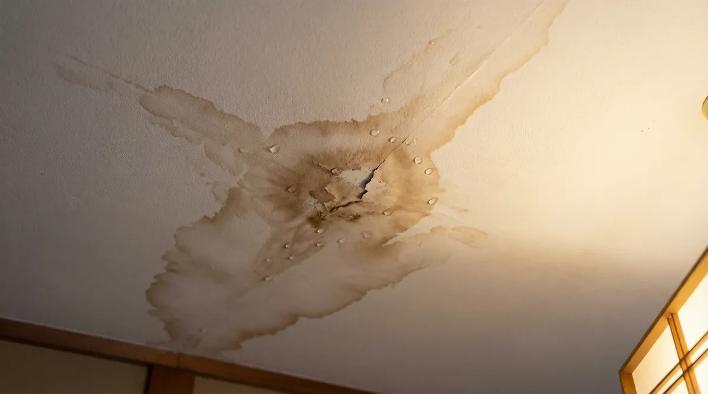
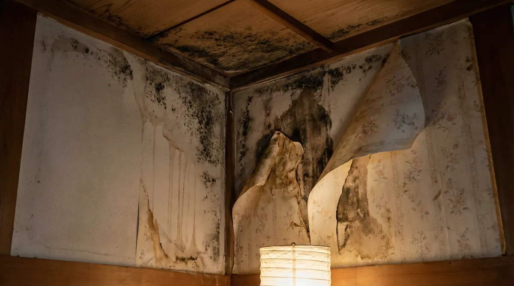

天井のシミの原因は雨漏り？結露・水漏れとの見分け方【放置NG】

天井を見上げたら、いつの間にかシミができていた——そんなとき、多くの人は「雨漏りかも」と思うはずです。ですが天井のシミの原因は雨漏りだけではありません。結露や配管の水漏れ、ネズミなど害獣の尿が原因になっていることもあります。
この記事では、築25年の実家で雨漏りを経験した管理人が、天井のシミが生まれる主な原因と、色・形・できる場所からの見分け方、そして放置するとどうなるのかをまとめました。「このシミ、何が原因だろう？」のヒントにしてください。
天井のシミ、主な原因は5つ
天井にできるシミの原因として、一般的に次の5つが挙げられます。見た目が似ていても原因や対処法は大きく異なるので、まずはそれぞれの特徴を知っておきましょう。なお、1つの原因だけでなく、結露と雨漏りが同時に起きているなど原因が複数重なっているケースもあるため、「どれか1つに当てはまれば確定」とは考えないほうが安全です。
① 雨漏り（屋根・外壁・ベランダなどからの浸水）
屋根や外壁、ベランダの防水層などの劣化・破損箇所から雨水が入り込み、天井材に染み込んでシミになるケースです。雨が降った後に色が濃くなったり、シミの範囲が徐々に広がっていく傾向があるとされています。台風や大雨の直後に目立ちやすい場合は、雨漏りの可能性を考えてみてください。ベランダ・陸屋根からの浸水についてはベランダからの雨漏りの記事でも詳しく解説しています。
② 結露（天井裏の湿気・温度差）
天井裏の換気が悪く湿気がこもっていると、室内外や上下の温度差で水滴が発生し、シミになることがあります。エアコンの冷気が天井裏に漏れていたり、断熱材が傷んでいたりすると起きやすいとされています。雨の日だけでなく、季節の変わり目や冷暖房を強く使う時期に出やすいのが、雨漏りとの違いの一つです。
③ 配管・エアコンからの水漏れ
上階の給排水管やエアコンのドレンホースから水が漏れていると、天井にシミができることがあります。マンション・アパートなどの集合住宅では、上階の住戸の水回りトラブルが原因になっているケースも少なくありません。雨の日と関係なくシミが出たり広がったりする場合は、配管系を疑うきっかけになります。
④ ネズミ・害獣の尿や汚れ
天井裏にネズミやハクビシンなどの害獣が住み着いていると、尿や汚れが天井材に染み込んでシミになることがあります。見た目だけでは雨漏りと区別しにくいこともありますが、天井裏からの物音・足音、糞の跡、獣のようなにおいを伴う場合は、害獣の可能性も考えてみてください。
⑤ タバコのヤニ・ホコリ・天井焼けなど
室内でのタバコや線香の煙に含まれるタール（ヤニ）が天井に付着し、うっすら黄色く変色することがあります。照明器具のまわりだけ変色している場合は、熱や紫外線による「天井焼け」が疑われます。これらは雨漏りに比べて色が薄く均一で、広がり方がゆっくりなことが多いとされています。乾いたホコリやクモの巣による黒ずみは、固く染み込んでいなければ水拭きで落ちることもあります。
原因別の見分け方（色・形・できる場所）
自分で原因を完全に特定することは難しいですが、次のような傾向を手がかりにできます。
| 原因 | 色・形の傾向 | 気づくきっかけ |
|---|---|---|
| 雨漏り | 輪郭のはっきりした茶色〜黄色のシミ。雨の後に広がる | 台風・大雨の直後、天井のたわみ |
| 結露 | 水滴状の跡が点々と。縁がぼやけている | 季節の変わり目、冷暖房使用時 |
| 配管・エアコン水漏れ | 雨とは無関係に出現・拡大する | 上階の水回り使用時、エアコン使用時 |
| 害獣（ネズミ等） | 黒ずみ・においを伴うことがある | 天井裏の物音、糞の跡 |
| タバコ・ホコリ等 | 色が薄く均一で、ゆっくり広がる | 喫煙習慣、照明まわりに集中 |
※あくまで一般的な傾向の整理です。原因が複数重なっていることもあり、見た目だけで断定はできません。
自分で判断せずプロの無料調査へ
※調査・見積もり無料。シミの原因が雨漏りかどうかの診断だけでも相談できます。
そのシミ、放置するとどうなる？
原因がわからないまま放置すると、次のようなリスクが考えられます（雨漏り放置のリスクについて詳しくはこちら）。
- シミの範囲が広がり、天井材や周辺の木部が傷んでくることがあります
- 湿気がこもった状態が続くと、カビが発生しやすくなります
- 原因が雨漏りや水漏れの場合、気づかないうちに建物内部の腐食が進んでいることがあります
- 害獣が原因の場合、放置するほど断熱材の損傷など被害が広がることがあります

気づいたときにまずやること
原因を特定する前でも、できることはあります。
- シミの場所・色・大きさを日付入りで写真に残す（火災保険の申請に使う可能性があるため）
- 雨の日に水が垂れてきたら、室内の応急処置（雨漏りの応急処置を参照）を行う
- 天井裏をのぞける場合でも無理をせず、異音・においの有無だけメモしておく
- シミの大きさや色の変化を、時々写真を撮って記録しておく
原因の特定は専門業者の調査が確実
ここまで紹介した見分け方は、あくまで「可能性を絞り込むヒント」です。1軒1軒、建物の構造や劣化の状況が違うため、ネットの情報だけで「これは結露だから心配ない」「これは雨漏りに違いない」と断定することはできません。
雨漏りが原因だった場合、台風や強風など自然災害が関係していれば火災保険の対象になることもあります。ただし適用の可否を判断するのは保険会社であり、業者ではありません。詳しくは雨漏りと火災保険についての記事で解説しています。害獣が原因だった場合は、害獣駆除の専門業者が別途必要になることもあります。
いずれにしても、調査・見積もり無料の業者にまず見てもらうのが、原因を遠回りせずに特定する一番の方法です。業者によっては赤外線サーモグラフィーなどの機材で、天井裏に水分がたまっている箇所を確認できる場合もあります。
よくある質問
天井のシミは自然に消えますか？
色素が染み込んでいる場合、クロスの張り替えなどをしない限り自然に消えることはあまりないとされています。原因が解消されていなければ、同じ場所にシミが再び出てくることもあります。
シミの部分だけ自分で塗装・補修してもいいですか？
見た目を一時的に隠すことはできますが、原因が解消されていなければ再発したり、内部で腐食やカビが進行していたりすることがあります。補修の前に、原因の調査を受けておくことをおすすめします。
雨の日だけシミが目立つ場合、必ず雨漏りですか？
雨の日に目立つ傾向は雨漏りを疑う手がかりの一つですが、結露も気象条件によって出方が変わるため、これだけで断定はできません。専門業者の調査で確認するのが確実です。
賃貸物件で天井にシミを見つけたらどうすればいいですか？
自分で補修せず、まずは管理会社・大家さんに連絡してください。原因調査や修理の手配は、管理会社側で行うのが一般的です。
ネズミが原因かもしれないと思ったら、雨漏り修理業者に相談していいですか？
雨漏りかどうかの切り分けの相談先として利用できます。ただし害獣そのものの駆除は別の専門業者（害獣駆除業者）の対応になることが多いため、調査結果に応じて案内してもらうとよいでしょう。